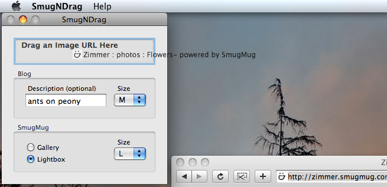

Introduction
SmugNDrag automates the creation of image links for SmugMug-managed images.
Usage
To use, navigate to the desired image in a SmugMug gallery with your
browser and drag the url to SmugNDrag.

Blog
If a description is entered, it will be used to describe the image in the event
the image does not display. The size dropdown will determine the size of the
image displayed in the page.
SmugMug
When the image is clicked, the browser will be taken to SmugMug to display
the image either in the gallery or the lightbox, depending on the destination
choice. If the lightbox is chosen, the size dropdown will determine the image
size.